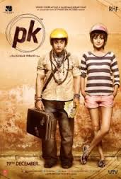

|
2 States |
A story about a romantic journey of a culturally opposite couple - Krish Malhotra and Ananya Swaminathan. They meet at the IIM-Ahmedabad College and during the program they fall in love. Complications arise after the program comes to an end and they decide to get married. Krish and Ananya belong to two different states of India. Krish, a North Indian Punjabi boy from Delhi, and Ananya, a Tamilian Brahmin from Chennai. |
 |
Interstellar |
Interstellar is a 2014 epic science fiction film directed by Christopher Nolan, starring Matthew McConaughey, Anne Hathaway, Jessica Chastain and Michael Caine. The film features a crew of astronauts who travel through a wormhole in search of a new home for humanity. Brothers Christopher and Jonathan Nolan wrote the screenplay, which had as its origins a script Jonathan developed in 2007. Christopher Nolan produced the film with his wife, Emma Thomas, and Lynda Obst. Theoretical physicist Kip Thorne, whose work inspired the film, was an executive producer and acted as scientific consultant. |
|  |
PK |
PK is a 2014 Indian satirical science fiction comedy film.The film was directed by Rajkumar Hirani, produced by Hirani and Vidhu Vinod Chopra, and written by Hirani and Abhijat Joshi.The film stars Aamir Khan in the title role with Anushka Sharma, Sushant Singh Rajput, Boman Irani, Saurabh Shukla, and Sanjay Dutt in supporting roles. It tells the story of an alien who comes to Earth on a research mission. He befriends a television journalist and questions religious dogmas and superstitions. |
 |
The Imitation Game |
In 1939, newly created British intelligence agency MI6 recruits Cambridge mathematics alumnus Alan Turing (Benedict Cumberbatch) to crack Nazi codes, including Enigma -- which cryptanalysts had thought unbreakable. Turing's team, including Joan Clarke (Keira Knightley), analyze Enigma messages while he builds a machine to decipher them. |
 |
The Lego Movie |
Emmet (Chris Pratt), an ordinary LEGO figurine who always follows the rules, is mistakenly identified as the Special -- an extraordinary being and the key to saving the world. He finds himself drafted into a fellowship of strangers who are on a mission to stop an evil tyrant's (Will Ferrell) plans to conquer the world. Unfortunately for Emmet, he is hopelessly -- and hilariously -- unprepared for such a task, but he'll give it his all nonetheless. |
 |
Queen |
A young Delhi woman from a traditional family goes on a solo honeymoon when her wedding is canceled. |
 |
Khoobsurat |
Khoobsurat (English: Beautiful) also known as Disney's Khoobsurat, is a 2014 Indian romantic Comedy film.The film is directed by Shashanka Ghosh and produced by Rhea Kapoor, Anil Kapoor and Siddharth Roy Kapur.It stars Sonam Kapoor, Fawad Afzal Khan, Kirron Kher, Ratna Pathak and Aamir Raza Hussain in lead roles. The film is loosely based on the 1980 film of the same name. |
 |
Taken 3 |
Ex-covert operative Bryan Mills (Liam Neeson) and his ex-wife, Lenore (Famke Janssen), are enjoying a reconciliation when Lenore is brutally murdered. Bryan is framed for the crime and flees, with the CIA, FBI and police all in hot pursuit. For the last time, he channels his rage and particular set of skills into hunting down Lenore's real killers, taking his revenge and protecting the one important thing left in his life: his daughter, Kim (Maggie Grace). |